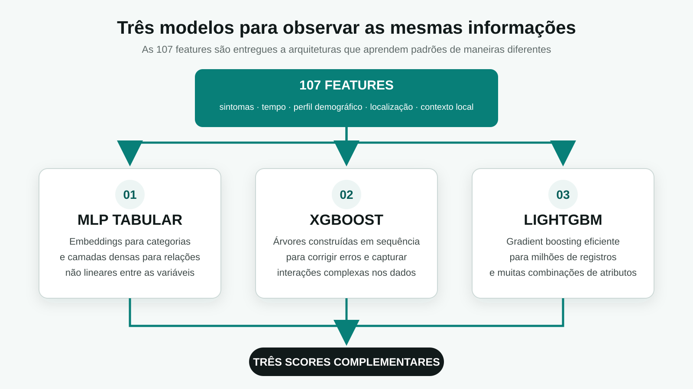
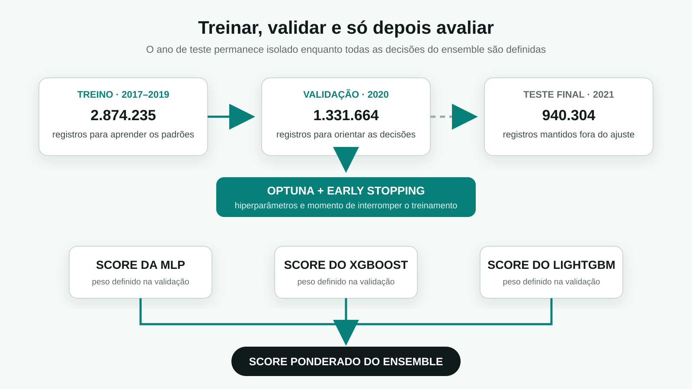
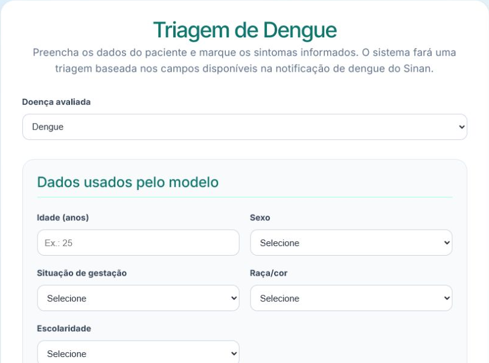
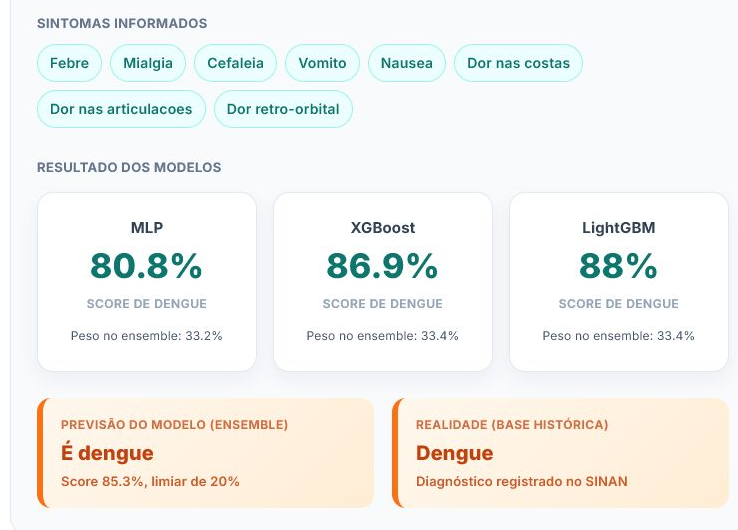
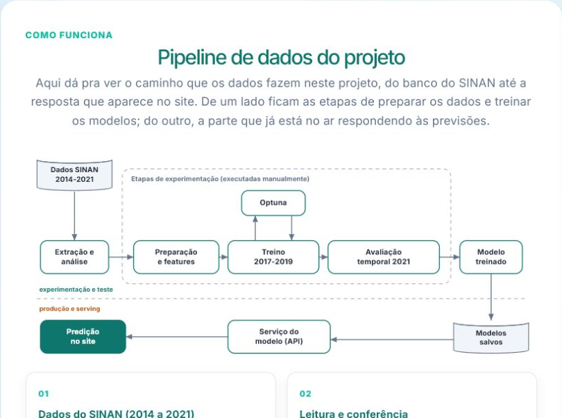
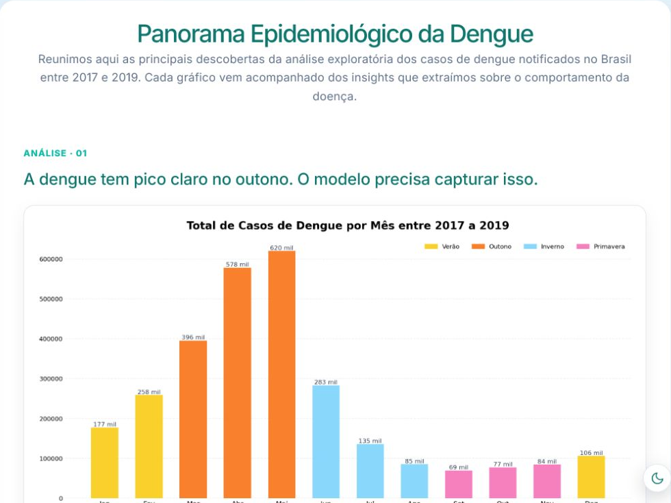

PARTE 1
Introdução ao Contexto do Projeto
Contexto do Projeto
Arboviroses são doenças causadas por vírus transmitidos por artrópodes, principalmente mosquitos e carrapatos, e podem representar riscos graves à saúde. O SINAN reúne milhões de registros históricos sobre dengue, zika e chikungunya, incluindo sintomas, como febre, exantema e dor retro-orbital, e informações epidemiológicas, como cidade, ocupação e escolaridade.
Esses dados ajudam a identificar padrões além dos sintomas. Região, escolaridade e gravidez, por exemplo, podem contribuir para a classificação dos casos. Durante o projeto, observou-se maior ocorrência de dengue entre mulheres, um padrão também discutido em notícias e possivelmente relacionado a hábitos cotidianos e vestimentas, embora sua causa não seja conclusiva.

Com isso, nasceu a vontade de criar uma ferramenta de apoio, capaz de observar simultaneamente todas essas informações, e produzir um score de classificação, a intenção nunca foi de criar um diagnóstico automático, e sim algo para ajudar especialistas, ou talvez apoiar em momentos de "pico" dessas doenças e saber melhor quem realizar uma triagem física rapidamente.
O pipeline desejado foi extrair os dados do SINAN, realizar os necessários tratamentos nas variáveis, fazer treino, validação e teste num split temporal, utilizando Optuna para trazer os hiperparâmetros mais otimizados, e salvar isso tudo para a aplicação, onde o foco maior é a triagem de pessoas, todas essas etapas serão descritas nas próximas etapas desse relatório.
Dicionário de Dados
final_classification:- classificação final do caso — confirmado ou descartado.
age_years:- idade do paciente em anos.
sex:- sexo registrado do paciente.
race:- raça ou cor registrada.
education_level:- nível de escolaridade.
occupation_code:- ocupação do paciente segundo a CBO.
pregnancy:- indica se a paciente estava gestante.
residence_state:- estado de residência.
residence_municipality:- município de residência.
residence_health_region:- região de saúde da residência.
fever:- presença de febre.
myalgia:- presença de dor muscular.
headache:- presença de dor de cabeça.
rash:- presença de exantema ou manchas na pele.
vomiting:- presença de vômito.
nausea:- presença de náusea.
back_pain:- presença de dor nas costas.
conjunctivitis:- presença de conjuntivite.
arthritis:- presença de artrite.
joint_pain:- presença de dor nas articulações.
petechiae:- presença de pequenas manchas hemorrágicas na pele.
retro_orbital_pain:- presença de dor atrás dos olhos.
number_of_symptoms:- quantidade de sintomas presentes.
number_of_reported_symptoms:- quantidade de sintomas que foram informados.
days_to_notification:- número de dias entre o início dos sintomas e a notificação.
notification_month:- mês em que o caso foi notificado.
symptom_epi_week_number:- semana epidemiológica do início dos sintomas.
symptom_month:- mês em que os sintomas começaram.
local_density:- volume de notificações no município nas quatro semanas anteriores.
local_positivity:- proporção recente de casos confirmados no município.
PARTE 2
Tratamento do Conjunto de Dados
Estado inicial dos dados SINAN
É preciso esclarecer uma coisa importante, existe um termo chamado: "GIGO", que representa a ideia de "lixo entra, lixo sai", isso é interessante para denotar a relevância de um tratamento coerente dos dados vindos do SINAN. Antes do tratamento, os dados possuíam vários problemas, que iriam dificultar tanto uma análise de dados quanto a realização coerente do pipeline de machine learning. Entre esses problemas estavam diversas colunas sem utilidade para predição.
Essas colunas poderiam fazer um "vazamento" da classificação ou apenas não ajudar na classificação pelo próprio conceito da coluna. Também havia campos vazios ou marcados como ignorados, além disso, cada ano mostrava um padrão diferente em algumas colunas, e após o ano de 2021, não aparece dados com a classificação de "Descartado para Arbovirose X", por isso apenas até esse ano foi feita a extração de dados e uso para teste.

Seleção dos anos
- Os anos de 2014 a 2016 tinham sintomas ausentes ou incompletos.
- Utilizá-los poderia fazer o modelo aprender diferenças de preenchimento, e não diferenças entre casos confirmados e descartados.
- Por isso, o treinamento foi feito com os dados mais consistentes, de 2017 a 2019.
- O ano de 2020 foi separado para ajustar as decisões dos modelos.
- O ano de 2021 foi deixado para a avaliação final.

Classificação dos casos
- Os códigos originais da classificação foram simplificados em dois grupos: confirmado e descartado.
- Casos sem conclusão ou com classificação inconclusiva não foram usados para ensinar os modelos.
- Assim, cada registro utilizado tinha uma resposta clara sobre aquilo que o modelo deveria aprender.

Sintomas
- Os sintomas foram representados como presentes, ausentes ou não informados.
- “Não apresentou febre” foi mantido como algo diferente de “não sabemos se apresentou febre”.
- Além dos sintomas individuais, foi calculada a quantidade de sintomas presentes.
- Também foi registrada a quantidade de sintomas realmente preenchidos.
- Foram criadas combinações para representar sintomas que aparecem juntos.
- Exantema e dor retro-orbital receberam um resumo específico porque apresentaram diferenças relevantes entre confirmados e descartados.

Tempo e sazonalidade
- Foi calculado o número de dias entre o início dos sintomas e a notificação.
- O mês e a semana epidemiológica foram incluídos porque a circulação da dengue muda durante o ano.
- Essas informações foram transformadas em variáveis cíclicas.
- Isso foi necessário porque o calendário forma um ciclo: dezembro está próximo de janeiro, mesmo que numericamente 12 pareça distante de 1.
- A mesma lógica foi aplicada às semanas epidemiológicas.

Informações demográficas e de localização
Características demográficas são um ponto muito importante de tratamento. Para escolaridade foi realizado um agrupamento em níveis semelhantes, e organizados em uma escala crescente, fazendo a variável representar uma progressão desde a escolaridade ausente ou não informada, até níveis mais altos como nível superior, mestrado, doutorado.
- Colunas como sexo, raça e gravidez foram transformadas usando um one-hot encoding, isso permite evitar uma noção de progressão irreal
- Para ocupação como haviam muitas, já que seguiam o CBO, aquelas que tinham baixa quantidade de membros foram agrupadas em "Outros"
Dados de localização foram preservados em: estado, município e região de saúde, isso é útil pois locais diferentes possuem características que podem permitir a proliferação e contaminação com essas arboviroses mais facilmente.

Contexto epidemiológico
Uma das transformações mais interessantes do projeto foi representar oque estava acontecendo no município antes de cada notificação, isso ajuda a entender o "cenário recente" do local em relação circulação recente de arboviroses, para isso foram criadas duas informações principais:
- Volume de notificações no município nas quatro semanas anteriores
- Proporção de casos confirmados nesse mesmo período
A ideia é que os sintomas de uma pessoa podem ganhar significados diferentes dependendo da circulação recente da dengue naquela localidade. Somente semanas anteriores foram consideradas, sem utilizar o resultado do próprio paciente Esse ponto merece uma seção própria porque conecta o tratamento dos dados à lógica epidemiológica do projeto, e foi muito útil para aumentar a capacidade preditiva dos modelos num geral.

PARTE 3
Análise Exploratória de Dados
Nesta seção, será realizada a análise exploratória dos dados utilizados no projeto. Antes de iniciar o treinamento dos modelos, é importante entender como os casos estão distribuídos e quais características parecem diferenciar os casos confirmados dos descartados.
A análise será conduzida a partir de algumas perguntas. Primeiro, observaremos um comportamento esperado ou uma hipótese sobre a dengue. Depois, utilizaremos os dados para verificar se essa tendência também aparece nos registros do SINAN. Por fim, relacionaremos as descobertas com as decisões tomadas com os modelos.
Análise · 01
Em quais períodos do ano a dengue aparece com mais frequência? A sazonalidade observada nos dados acompanha o comportamento epidemiológico esperado?
É de conhecimento epidemiológico que a dengue costuma aparecer com maior frequência durante o final do verão e o início do outono. Temperatura, umidade e presença de água parada podem favorecer o desenvolvimento do mosquito, fazendo com que determinados períodos do ano apresentem condições mais favoráveis para a circulação da doença.
Porém, ainda é necessário verificar se esse comportamento aparece de maneira clara nos dados utilizados pelo projeto. Caso as notificações realmente apresentem uma concentração em determinados meses, essa informação pode ser útil tanto para compreender o comportamento da dengue quanto para ajudar os modelos a reconhecer o contexto em que cada caso aconteceu.

O gráfico apresenta a quantidade total de notificações registradas em cada mês entre 2017 e 2019. É possível perceber que os casos não estão distribuídos igualmente durante o ano. Existe uma escalada durante o verão, seguida por uma concentração muito maior no início do outono.
Pico absoluto
Maio concentra 620 mil casos, o maior volume de todo o período. Abril (578 mil) e Março (396 mil) completam o pico do Outono, que responde por 60% das notificações anuais.
Essa concentração mostra que o período entre março e maio não representa apenas uma pequena variação sazonal. Ele reúne a maior parte das notificações observadas durante os três anos analisados.
Escalada no Verão
Janeiro e Fevereiro já sinalizam o surto (177 e 258 mil), indicando que a transmissão começa antes do pico do calor.
Isso mostra que o crescimento não acontece de forma repentina em março. As notificações começam a aumentar durante o verão e continuam avançando até atingirem seu maior nível em maio.
Vale no Inverno/Primavera
Queda expressiva de agosto a outubro (69 a 85 mil casos), mas nunca chega a zero, o Aedes mantém atividade o ano todo.
Mesmo nos meses com menor volume, ainda existem dezenas de milhares de registros. Portanto, a sazonalidade representa uma mudança de intensidade, mas não o desaparecimento completo da doença.
O que essa análise demonstra?
A tendência encontrada nos dados acompanha o comportamento epidemiológico esperado: os casos começam a crescer durante o verão, atingem seu maior volume no início do outono e diminuem durante o inverno e a primavera.
Análise · 02
Quais sintomas aparecem com mais frequência nos casos confirmados? Os sintomas mais comuns também são os melhores para diferenciar dengue?
Quando pensamos na identificação da dengue, alguns sintomas surgem imediatamente, como febre, cefaleia e mialgia. Por serem conhecidos como manifestações comuns da doença, seria razoável imaginar que eles também fossem suficientes para separar os casos confirmados dos descartados.
Porém, um sintoma pode aparecer com muita frequência entre os confirmados e, ao mesmo tempo, também estar presente em pessoas que receberam outra classificação. Dessa forma, não basta observar apenas quantas pessoas apresentaram o sintoma; também é necessário comparar sua frequência entre os dois grupos.

O gráfico compara a frequência de cada sintoma entre casos confirmados e descartados. De maneira geral, os sintomas aparecem mais frequentemente nos confirmados, mas a distância entre os grupos varia bastante.
Tríade dominante
Febre (85.9%), cefaleia (80.2%) e mialgia (79.6%) passam de 79% nos confirmados, são quase universais e pouco discriminantes quando vistos isolados.
Esses sintomas ajudam a caracterizar o quadro geral da doença, mas sua alta frequência não significa que sejam capazes de resolver a classificação sozinhos. Como também aparecem nos descartados, sua presença isolada oferece apenas uma parte da informação necessária.
Maior diferença proporcional
Exantema tem o maior gap relativo entre as classes: 25.4% nos confirmados vs 15.6% nos descartados (+63% relativo). Um dos sinais mais diferenciadores.
Mesmo aparecendo em menos pacientes que febre, cefaleia ou mialgia, o exantema apresenta uma diferença proporcional maior entre as classificações. Isso mostra que um sintoma menos frequente pode ser mais útil para diferenciar os grupos.
Dor retro-orbital
37.6% nos confirmados vs 26.8% nos descartados, uma diferença expressiva e consistente com a clínica clássica da dengue.
Assim como o exantema, a dor retro-orbital não é o sintoma mais comum, mas apresenta uma diferença relevante entre confirmados e descartados.
Então qual sintoma identifica dengue?
A análise não aponta um único sintoma capaz de determinar a classificação. Febre, cefaleia e mialgia são muito frequentes, enquanto exantema e dor retro-orbital apresentam diferenças proporcionais maiores. O valor dessas informações aparece principalmente quando elas são observadas em conjunto.
Análise · 03
Existe diferença na distribuição dos casos confirmados entre homens e mulheres? O que pode ajudar a explicar essa diferença?
Depois de analisar quando os casos acontecem e quais sintomas aparecem com maior frequência, também é importante observar quem são as pessoas presentes nos registros confirmados.
O sexo não determina sozinho se uma pessoa terá dengue, mas sua distribuição pode revelar diferenças de exposição, rotina, ocupação e procura por atendimento. A primeira etapa é verificar se homens e mulheres aparecem de maneira semelhante entre os casos confirmados.

O gráfico mostra uma presença maior de mulheres entre os casos confirmados no período analisado.
Distribuição
933.052 casos femininos (55.7%) contra 743.044 masculinos (44.3%), uma diferença de cerca de 190 mil casos em 3 anos.
A diferença não é pequena: mais da metade dos registros confirmados pertencem ao grupo feminino. Isso levanta uma nova pergunta: essa distribuição pode estar relacionada aos ambientes e atividades presentes no cotidiano dessas pessoas?
Hipótese de exposição
Segundo o ESTADO DE MINAS, a maior proporção feminina pode estar ligada à exposição doméstica. O Aedes aegypti se reproduz principalmente em reservatórios de água em casa, então quem passa mais tempo em casa fica mais exposto.
Essa hipótese pode ser investigada utilizando outra informação disponível no conjunto de dados: a ocupação. Caso atividades ligadas ao ambiente doméstico também apareçam com frequência entre as mulheres, teremos mais uma informação para observar essa tendência.
Interação com ocupação
"Dona de Casa" lidera entre mulheres (77.874 casos), reforçando a hipótese de que o ambiente doméstico é o principal vetor de exposição feminina.
A análise de sexo, portanto, não termina apenas na diferença de quantidade. Ela conduz a uma segunda análise, relacionada às ocupações registradas e aos possíveis ambientes de exposição.
Implicação para o modelo
Sexo é uma variável útil para o modelo, tanto sozinha quanto combinada com ocupação e localização. Essas relações permitem que o modelo observe o perfil do paciente de maneira mais ampla, em vez de depender apenas dos sintomas.
Análise · 04
As ocupações mais frequentes são as mesmas entre homens e mulheres? O perfil ocupacional pode revelar diferentes formas de exposição?
A diferença observada entre homens e mulheres levanta a necessidade de analisar as ocupações. Como determinadas profissões estão relacionadas a ambientes e rotinas diferentes, elas podem ajudar a compreender alguns dos padrões de exposição presentes nos dados.
Para isso, as ocupações foram separadas por sexo. Dessa maneira, é possível verificar quais atividades aparecem com maior frequência em cada grupo e se os perfis encontrados são semelhantes ou distintos.


Entre as mulheres, a ocupação "Dona de Casa" aparece na primeira posição. Estudantes também possuem uma participação elevada entre os casos confirmados.
Entre os homens, estudantes também aparecem em destaque, mas o restante da distribuição apresenta ocupações diferentes das observadas entre as mulheres.
Exposição doméstica
Dona de Casa lidera entre mulheres com 77.874 casos.
Esse resultado se conecta à análise anterior, em que foi observada uma presença feminina maior entre os confirmados. O ambiente doméstico aparece novamente como uma possível informação relacionada ao perfil de exposição.
Estudantes em ambos
Lidera entre homens (59k) e é 2º entre mulheres (60k).
A presença elevada de estudantes nos dois grupos mostra que alguns perfis ocupacionais são compartilhados, mesmo quando a distribuição geral apresenta diferenças.
Exposição externa
Pedreiro e trabalhador agropecuário aparecem só entre homens.
Essas ocupações representam rotinas diferentes da exposição doméstica observada entre as mulheres. Elas podem envolver maior permanência em ambientes externos e contato com localidades que possuem diferentes condições para a presença do mosquito.
O que a comparação entre os dois gráficos demonstra?
Os casos confirmados apresentam perfis ocupacionais diferentes entre homens e mulheres. Algumas ocupações, como estudantes, aparecem nos dois grupos, enquanto outras se concentram em apenas um.
Isso sugere analisar sexo e ocupação em conjunto, pois a ocupação acrescenta contexto demográfico e ajuda a representar diferenças no cotidiano dos pacientes.
Principais conclusões da análise exploratória
A análise começou investigando a distribuição temporal dos casos e confirmou uma forte sazonalidade, com crescimento durante o verão e maior concentração entre março e maio.
Em seguida, a comparação dos sintomas mostrou que os mais frequentes não são necessariamente os mais capazes de diferenciar as classificações. Febre, cefaleia e mialgia aparecem em grande parte dos confirmados, enquanto exantema e dor retro-orbital apresentam diferenças proporcionais maiores.
A análise demográfica mostrou uma presença maior de mulheres entre os casos confirmados. Essa descoberta levou à investigação das ocupações, em que foram encontrados perfis diferentes entre homens e mulheres, além da presença relevante de atividades relacionadas ao ambiente doméstico.
Em resumo, podemos concluir que:
- A dengue apresenta uma forte variação durante o ano, com maior concentração de notificações entre março e maio.
- Os sintomas precisam ser observados em conjunto, porque nenhum deles é suficiente para diferenciar sozinho os casos confirmados e descartados.
- Exantema e dor retro-orbital apresentam diferenças proporcionais relevantes entre as classificações.
- Mulheres representam a maior parte dos casos confirmados no período analisado.
- Sexo e ocupação apresentam relações que podem ajudar a representar diferentes perfis de exposição.
- Informações temporais, clínicas, demográficas e territoriais devem ser analisadas simultaneamente durante a construção dos modelos.
PARTE 4
Modelagem Preditiva com Machine Learning
Com os dados tratados e as principais relações exploradas, a próxima etapa foi utilizar todas essas informações para treinar modelos capazes de observar cada notificação em conjunto, tentando separar os casos confirmados dos descartados.
Do dado tratado ao conjunto de treinamento
Durante a análise exploratória, percebemos que nenhum grupo de informações era suficiente para representar sozinho a classificação de um caso, os sintomas possuem importância, mas também mudam de significado quando são observados junto à época do ano, ao local da notificação e ao contexto recente do município. Por isso, reuni essas diferentes perspectivas em um mesmo conjunto de 107 features, que se tornou a entrada comum dos modelos de Machine Learning.
O treinamento utilizou 2.874.235 registros de 2017 a 2019, em cada linha o modelo recebia as informações disponíveis sobre a notificação e tentava distinguir os casos confirmados dos descartados. É importante ressaltar que resultados de exames, evolução, encerramento, hospitalização e qualquer outra informação posterior do próprio paciente não fizeram parte das features, pois caso fossem utilizados, o modelo poderia aprender a resposta que deveria prever, criando uma capacidade que não existiria em uma nova triagem.
Também mantive o mesmo esquema de features durante todo o pipeline, isso significa que a ordem, o nome e o tratamento das variáveis usados no treinamento são os mesmos esperados durante uma previsão, algo importante para impedir que os modelos recebam informações organizadas de uma forma durante o treino e de outra quando forem utilizados.
Por que utilizar três modelos diferentes?
Com o conjunto de treinamento pronto, eu poderia escolher apenas um algoritmo e buscar o melhor resultado possível com ele, porém modelos diferentes podem observar padrões diferentes nas mesmas informações. Por isso, selecionei uma rede neural MLP e dois modelos de gradient boosting baseados em árvores, o XGBoost e o LightGBM, os três recebem as mesmas 107 features, mas possuem maneiras diferentes de aprender as relações presentes nos dados.

Essa diferença é útil porque os três modelos não observam os dados da mesma forma, então também não precisam cometer exatamente os mesmos erros. A MLP pode encontrar interações não lineares entre muitas variáveis ao mesmo tempo, enquanto XGBoost e LightGBM constroem sequências de árvores para dividir os registros conforme os padrões encontrados, com isso, cada arquitetura pode contribuir com uma forma diferente de entender o mesmo problema.
Como a MLP aprende com dados tabulares?
Redes neurais são frequentemente associadas a imagens ou textos, porém também podem ser utilizadas com dados tabulares. Nesse projeto, criei uma MLP preparada para lidar separadamente com informações categóricas e numéricas, escolaridade, ocupação, estado, município e região de saúde foram transformados em embeddings, representações menores que permitem à rede aprender semelhanças entre categorias durante o próprio treinamento, em vez de tratar cada código apenas como um número comum.
As features numéricas passaram por uma normalização e depois foram unidas aos embeddings antes de entrar nas quatro camadas ocultas da rede, com 1024, 512, 256 e 128 neurônios. Entre essas camadas utilizei LeakyReLU, Batch Normalization e Dropout, elementos que ajudam a rede a aprender relações complexas, manter o treinamento estável e reduzir o risco de memorizar excessivamente os registros usados no treino, abaixo está a parte principal do código utilizada para montar essa estrutura:

Para treinar a MLP, utilizei o otimizador AdamW e uma função de perda que considera a diferença entre as classes, o aprendizado foi acompanhado no conjunto de validação de 2020 e interrompido quando a rede deixava de melhorar. Com isso, o modelo salvo não era simplesmente o da última época, mas aquele que apresentou o melhor comportamento durante a validação.
XGBoost e LightGBM: duas leituras baseadas em árvores
O XGBoost e o LightGBM pertencem à família do gradient boosting, diferente de uma única árvore de decisão, esses modelos constroem árvores em sequência, fazendo com que cada nova etapa tente corrigir parte dos erros anteriores. Isso é especialmente útil em dados tabulares, em que sintomas, datas, ocupações e localizações podem formar várias combinações difíceis de representar com regras isoladas.
Ainda que os dois utilizem o mesmo princípio, eles não constroem suas árvores exatamente da mesma forma, o XGBoost oferece um processo mais controlado de regularização e crescimento, enquanto o LightGBM foi desenvolvido para treinar com eficiência em conjuntos extensos. Como o projeto possui milhões de registros e mais de uma centena de features, comparar as duas implementações permitiu observar como essas diferenças apareciam na classificação dos casos, abaixo podemos ver a parte do código responsável por criar cada modelo:

Para escolher os hiperparâmetros, utilizei o Optuna sobre amostras estratificadas do treino e da validação, a ferramenta testou diferentes combinações de quantidade e profundidade das árvores, taxa de aprendizado, proporção de linhas e features utilizadas e níveis de regularização. Depois de encontrar a melhor configuração, cada modelo foi treinado novamente com o conjunto completo, sempre usando 2020 para acompanhar o aprendizado e aplicar early stopping quando novas árvores deixavam de trazer melhorias.
O papel da validação temporal
Durante todo esse processo, o ano de 2020 teve uma função diferente dos anos de treinamento. Os dados de 2017 a 2019 foram utilizados para ensinar os padrões aos modelos, enquanto 2020 serviu para comparar configurações, interromper treinamentos no momento adequado e definir como as previsões seriam combinadas, assim, essas decisões foram tomadas observando um período posterior ao treino, mas sem utilizar o conjunto reservado para a avaliação final.
Essa separação foi importante porque uma divisão aleatória misturaria registros de anos diferentes entre treino e validação. Como a circulação da dengue, o preenchimento das notificações e o próprio contexto epidemiológico mudam com o tempo, isso poderia mostrar um resultado melhor do que realmente seria num período futuro, por isso respeitei a ordem dos anos, fazendo o pipeline aprender com o passado para depois classificar novas notificações.

Somente depois de finalizar os modelos, seus hiperparâmetros, os pesos do ensemble e a regra de classificação, o conjunto de 2021 foi carregado para avaliação, assim, seus 940.304 registros não participaram de nenhuma escolha anterior, com isso, o resultado final passou a representar uma avaliação fora do período utilizado para construir o sistema.
Unindo as previsões em um ensemble
Depois do treinamento, cada modelo passou a produzir seu próprio score para um caso, em vez de realizar uma votação simples, combinei esses três valores por meio de uma média ponderada. Os pesos foram definidos a partir do recall de cada modelo na validação de 2020 e depois normalizados, fazendo com que os modelos que encontraram mais casos confirmados nesse período tivessem uma participação ligeiramente maior no resultado conjunto, abaixo está a parte do código que realiza essa combinação:

A ideia do ensemble era aproveitar as diferenças entre os modelos, quando MLP, XGBoost e LightGBM encontram um padrão semelhante, o score conjunto recebe o apoio dos três, quando existe divergência, os pesos ajudam a equilibrar as previsões de acordo com o comportamento que cada modelo apresentou na validação.
Ao final, esse processo entrega um único score de classificação, que ainda precisa ser comparado a um limiar para decidir entre confirmado e descartado. Esse valor não representa uma probabilidade clínica calibrada e não realiza um diagnóstico, a escolha do ponto de operação e o impacto dessa decisão sobre os acertos e erros serão analisados na próxima parte, junto às métricas do modelo.
O que ficou definido antes da avaliação
Com isso, a etapa de modelagem terminou com um pipeline único e reproduzível, em que todos os modelos recebem o mesmo conjunto de informações e nenhuma decisão depende dos registros reservados para o teste final.
Em resumo, podemos concluir que:
- As 107 features reúnem informações clínicas, temporais, demográficas, territoriais e epidemiológicas em uma mesma entrada.
- A MLP utiliza embeddings e camadas densas para aprender relações não lineares nos dados tabulares.
- XGBoost e LightGBM utilizam sequências de árvores e trazem duas formas diferentes de observar o mesmo problema.
- O ano de 2020 orienta otimização, early stopping e formação do ensemble, sem participar do treinamento principal.
- Os pesos do ensemble são definidos na validação e permanecem congelados antes da abertura do teste de 2021.
- O resultado produzido é um score de classificação, não um diagnóstico ou uma probabilidade clínica.
Na próxima parte, vamos observar como esse ensemble se comportou nos 940.304 registros de 2021, entendendo o que Accuracy, Precision, Recall e ROC-AUC mostram sobre a classificação.
PARTE 5
Métricas e Avaliação do Modelo
Depois de finalizar o treinamento, definir os pesos do ensemble e congelar o limiar de decisão, abri o conjunto temporal de 2021 para observar como o modelo se comportaria com registros que não participaram de nenhuma escolha anterior.
Abrindo o teste final de 2021
A avaliação foi realizada sobre 940.304 notificações, sendo 484.586 casos descartados e 455.718 casos confirmados, os dois grupos aparecem em quantidades próximas, e como os registros pertencem a um ano posterior ao período de treinamento, o teste se aproxima mais de uma situação real, em que o sistema aprende com dados passados e depois recebe novas notificações no futuro.
Nesse momento, nenhum hiperparâmetro foi alterado, os modelos não foram treinados novamente e o resultado de 2021 não foi utilizado para escolher o limiar. Com isso, as métricas não mostram o melhor ajuste que poderia ser encontrado observando o próprio teste, mas sim o comportamento do pipeline que já estava definido antes de esses registros serem abertos.
Accuracy
Acertou a classificação de 677.991 dos 940.304 registros avaliados.
Precision
De cada 100 casos marcados como dengue, aproximadamente 66 eram confirmados.
Recall
Encontrou aproximadamente 87 de cada 100 casos de dengue realmente confirmados.
ROC-AUC
Mede a capacidade de separar confirmados e descartados ao considerar diferentes limiares.
A Accuracy mostra que o ensemble acertou pouco mais de sete em cada dez classificações, porém esse valor não deve ser observado sozinho, pois o objetivo do limiar escolhido não era distribuir os erros igualmente, e sim reduzir a quantidade de casos confirmados que seriam ignorados, por isso Precision e Recall precisam ser lidos em conjunto para entendermos qual tipo de erro foi mais aceito pelo sistema.
Com Precision de 66,1%, parte das notificações classificadas como dengue ainda corresponde a casos descartados, enquanto o Recall de 87,3% mostra que a maior parte dos casos realmente confirmados foi encontrada. Esse equilíbrio faz sentido para uma ferramenta de apoio à triagem, pois deixar um caso verdadeiro passar pode ser mais preocupante do que encaminhar um caso adicional para avaliação, embora isso também aumente a quantidade de falsos positivos.
Por que o limiar de 0,30 muda a leitura do modelo?
O ensemble não entrega diretamente as palavras confirmado ou descartado, ele produz um score contínuo e o limiar transforma esse valor em uma classificação. Quando o ponto de corte é reduzido, mais registros passam a ser marcados como positivos, o Recall tende a crescer e menos casos confirmados ficam abaixo do corte, porém a Precision e a especificidade podem diminuir, pois também aumentam os casos descartados enviados para o grupo positivo.
O limiar de 0,30 foi definido utilizando apenas a validação de 2020 e permaneceu congelado antes do teste final, enquanto os modelos individuais mantiveram seus próprios limiares escolhidos no mesmo período, assim, a avaliação de 2021 não foi utilizada para procurar depois o corte que produziria a métrica mais favorável.

Podemos observar que existe uma região em que diferentes limiares produzem valores próximos de F1, por isso, o maior valor isolado dessa métrica não precisa ser a única regra de decisão. No ensemble, o ponto de 0,30 mantém um resultado próximo dos maiores valores e aumenta a sensibilidade, uma escolha coerente com o objetivo de encontrar mais casos confirmados antes da avaliação final.
Lendo os acertos e erros na matriz de confusão
As métricas resumem o comportamento do modelo, mas a matriz de confusão permite observar de onde cada percentual surgiu, separando os acertos sobre casos descartados e confirmados dos dois tipos de erro possíveis, assim, em vez de olhar apenas para a Accuracy, podemos entender quantos registros foram levados para cada lado pelo limiar escolhido.

A principal leitura está na relação entre a linha dos casos confirmados e a linha dos descartados, o quadrante inferior direito mostra os confirmados encontrados, enquanto o superior direito reúne os descartados que também foram enviados para a classe positiva, com isso, conseguimos visualizar por que aumentar o Recall também pode aumentar os falsos positivos.
Essa troca precisa estar clara para quem utiliza o resultado, pois o sistema aceita encaminhar mais registros para o grupo positivo na intenção de reduzir a quantidade de casos confirmados abaixo do limiar, um comportamento que pode ajudar numa priorização, mas que nunca deve ser interpretado como diagnóstico automático.
O ensemble foi melhor em todas as métricas?
Comparar os modelos ajuda a mostrar que não existe apenas uma forma de entender qual foi o melhor, XGBoost e LightGBM alcançaram Accuracy e Precision ligeiramente maiores em seus próprios pontos de operação, enquanto o ensemble, utilizando o limiar de 0,30, abriu mão de parte dessa precisão para encontrar uma proporção muito maior dos casos confirmados.

O gráfico mostra que os modelos alcançaram resultados próximos em várias métricas, enquanto as diferenças aumentam naquelas que dependem do ponto de corte, com isso, o principal papel do ensemble não é superar os outros modelos em todos os resultados, mas combinar suas previsões para entregar o comportamento escolhido para a triagem.
A capacidade de separar os dois grupos
A ROC-AUC observa o modelo em vários limiares, comparando a taxa de verdadeiros positivos com a taxa de falsos positivos, com isso, ela não mostra apenas a decisão tomada em 0,30, mas a capacidade geral de ordenar os casos confirmados acima dos descartados em diferentes pontos de corte.


As curvas quase sobrepostas mostram que os modelos possuem uma capacidade parecida de separar os grupos, e que a diferença mais visível aparece quando os scores são transformados em classes por um limiar, enquanto a Precision-Recall mostra a troca entre encontrar mais confirmados e manter uma maior confiança nas marcações positivas.
Também é importante não confundir ROC-AUC com Accuracy ou com probabilidade clínica, essa métrica resume a ordenação produzida pelo score em diferentes limiares, sem significar que o mesmo percentual de pacientes será classificado corretamente e sem garantir que o valor produzido represente um risco individual calibrado.
O que as métricas permitem concluir?
O teste temporal mostrou que o ensemble consegue encontrar a maior parte dos casos confirmados e manter uma boa separação entre os dois grupos, porém esse resultado vem acompanhado de uma quantidade relevante de falsos positivos, por isso, ele faz mais sentido como uma ferramenta de apoio e priorização do que como uma decisão final sobre cada notificação.
As métricas também mostram que a escolha do limiar faz parte do comportamento do sistema, um modelo pode separar bem os grupos e ainda produzir classificações muito diferentes conforme o ponto de corte, por isso Accuracy, Precision, Recall, matriz de confusão e ROC-AUC foram analisadas em conjunto, sempre mantendo a separação temporal e evitando escolher decisões com base no teste final.
Na próxima parte, vamos observar como esse score foi utilizado em uma aplicação web, quais informações chegam até a API e como o resultado é apresentado sem assumir o papel de um diagnóstico clínico.
PARTE 6
Aplicação Web e Disponibilização do Modelo
Depois de treinar e avaliar os modelos, o próximo passo foi transformar todo esse pipeline em uma interface, permitindo preencher uma notificação, enviar seus dados para a API e visualizar o resultado sem precisar executar notebooks ou códigos manualmente.
Da notificação ao score dos modelos
A página de Triagem reúne as informações disponíveis no momento da notificação, como idade, sexo, gestação, raça, escolaridade, ocupação, localização, datas e sintomas. Também é possível escolher qual arbovirose será avaliada, com isso, a interface organiza os campos enviados ao backend e não depende de informações posteriores, como exame, evolução ou encerramento do caso.

A interface foi construída com React e TypeScript, enquanto a API em FastAPI recebe os campos, aplica a mesma preparação utilizada durante o treinamento e cria as features esperadas pelos modelos, depois disso, MLP, XGBoost e LightGBM produzem seus scores individuais, que são combinados pelo ensemble antes da resposta voltar para o navegador.
Apresentando o resultado sem transformá-lo em diagnóstico
Na resposta, os três scores aparecem separadamente junto aos pesos utilizados no ensemble, e logo abaixo a aplicação mostra a classificação combinada e o limiar aplicado, isso ajuda a entender que o resultado final não vem de um único algoritmo, além de permitir observar quando os modelos apresentam valores semelhantes ou diferentes.

Além da triagem manual, a Home permite sortear um caso anonimizado do teste e comparar a previsão com a classificação registrada na base histórica, essa simulação serve para demonstrar o pipeline completo e não para validar clinicamente uma pessoa, por isso, a aplicação apresenta o resultado como score de classificação e mantém o aviso de que a ferramenta não substitui a avaliação de um profissional de saúde.
Mostrando também o caminho dos dados
Para não limitar a aplicação ao formulário, criei uma página de Pipeline, que explica o caminho entre dados do SINAN, preparação, treinamento, avaliação, modelos salvos e API. Também criei uma página de Panorama Epidemiológico, que reúne as principais descobertas da análise exploratória, assim, quem acessa o projeto consegue entender tanto o resultado exibido quanto todo o processo que existe por trás dele.


O resultado final do projeto
Com a aplicação, reuni dados, modelos, API e interface em um mesmo fluxo, permitindo testar notificações, acompanhar os scores individuais e entender como a classificação combinada foi formada.
Ao mesmo tempo, a principal limitação do projeto continua visível na forma como o resultado é apresentado, o sistema oferece apoio à triagem e uma demonstração técnica do uso de Machine Learning sobre dados do SINAN, mas não realiza diagnóstico e não substitui uma análise clínica.